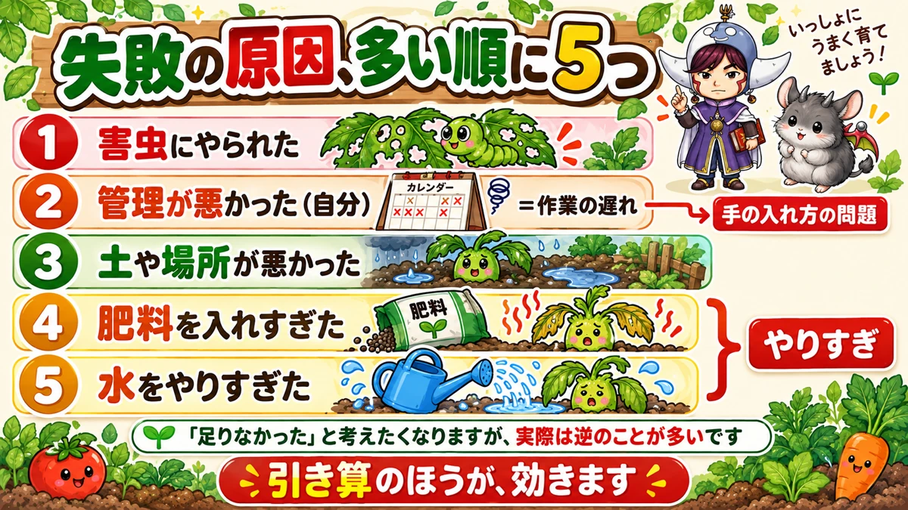
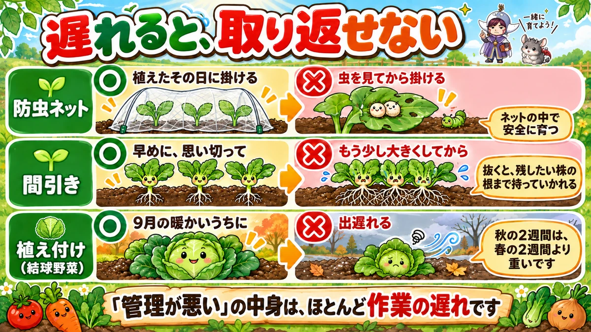
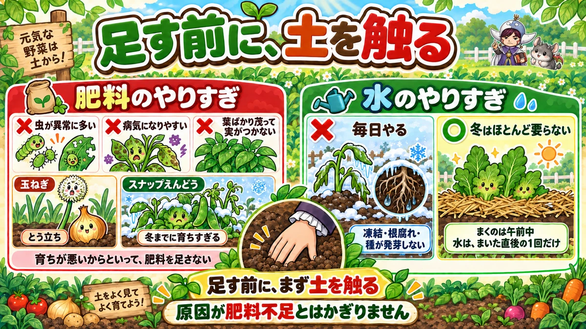

Garden failures aren't too little 🌱 They're too much

🌱 "I'm trying really hard and it still isn't working."
🌱 "I'm feeding and watering it and it's growing badly."
🌱 "I feel like I fall over at the same place every year."
Hello, I'm Eiko. Eight years of growing vegetables organically and without pesticides, and a teaching licence in science.
Today, a stock-take of failure. I lined up everything I've got wrong in eight years next to the published survey results on why home growers fail — the ones seed companies and similar put out.
They matched almost exactly 😅
The point of the article, up front:
Most failures are not too little. They're too much.
Feed, water, attention — all of it. Subtraction works better than addition 🌱
The reasons, most common first

What this diagram says （図解の文字）
- The five most common causes of failure
- 1 pests got it ／ 2 poor management (me) — = jobs done late, a problem of how you intervene
- 3 bad soil or bad position ／ 4 too much fertiliser ／ 5 too much water — too much
- You want to think something was missing, but in reality it's usually the reverse
- Subtraction works better
The order in the surveys runs roughly:
- Pests got it
- Poor management (i.e. me)
- Bad soil or bad position
- Too much fertiliser
- Too much water
Look at four and five
Both of them are "too much".
And number two — "management" — turns out, when you open it up, to be almost entirely about how and when you intervened.
The instinct when something goes wrong is to ask what was missing. Usually nothing was.
❶ Pests are decided the day you plant
The most common failure is insects, and with leafy crops it's total — they don't half-eat a bed of salad.
The remedy is simple: insect netting. The difficulty is entirely the timing.

What this diagram says （図解の文字）
- Late, and you can't get it back
- Insect netting — ○ put it on the day you plant ／ × put it on once you see insects — they then grow up safely inside the net
- Thinning — ○ early, and decisively ／ × "once they're a bit bigger" — pulling one takes the roots of the one you wanted to keep
- Planting (heading crops) — ○ while it's still warm ／ × starting late — two weeks in autumn weigh more than two weeks in spring
- "Poor management" is nearly always jobs done late
Net it the same day
The usual sequence is: plant → a few days pass → you see an insect → you hurriedly put the netting on.
Too late. In those few days eggs were laid on the undersides of the leaves, and you have now built them a predator-free enclosure.
Net on the day you plant, while there is not a single insect in sight.
Fertiliser is calling them in
A less obvious one: overfeeding attracts pests.
High nitrogen gives you soft, lush leaf, which is exactly what a caterpillar is looking for.
Leafy crops are slow to bulk up, so the temptation to top-dress is strong — and that's often the moment you invite the problem in.
Grow only what you can look at
In the end it comes down to: look every day, and pick off what you find.
A commercial grower can't — there's too much of it. In a home garden you can.
So keep the area down to what you can actually inspect daily. That is the single most effective pest control there is. Don't plant more than that.
❷ "Poor management" means late
Three jobs where lateness is unrecoverable:
Planting late
Heading crops — cabbage, Chinese cabbage — build their bodies while it's still warm. Start late and no amount of effort once it's cold will catch up. You get a small head, or no head at all.
Two weeks in autumn weigh more than two weeks in spring.
Thinning late — the worst of the three
I've done this repeatedly. You think "I'll let them get a bit bigger first", and while you're thinking it the roots tangle.
Then when you pull one out, it takes the roots of the plant you wanted to keep with it.
Thinning gets delayed because it feels wasteful — and the delay is what actually wastes them. Early, and decisively. Crowding does more damage than thinning ever does.
Feeding late
Fruiting crops run out of food mid-season. A cucumber or an aubergine is eating while it fruits.
"When it starts to look tired" is already late. Once harvest begins, feed on a schedule.
❸ Soil and position can't be fixed afterwards
Sun and drainage are not adjustable once a plant is in the ground.
So the rule is: give the slow crops the good spots.
- Chinese cabbage, cabbage, broccoli → the sunniest place
- Mooli, carrots → free-draining, and somewhere you can dig deep
Put small things in the bad spots
You don't have to write off a shady corner. Plant things you harvest small — baby leaf, mustard greens, cut-and-come-again salad.
Anything that finishes quickly can reach harvest even in poor conditions.
❹❺ The two kinds of too much

What this diagram says （図解の文字）
- Touch the soil before you add anything — healthy vegetables start from the soil!
- Too much fertiliser — × abnormal numbers of pests ／ × disease comes easily ／ × all leaf, no fruit
- Onions: bolting ／ Sugar snaps: too big before winter
- Don't add fertiliser just because growth is poor
- Too much water — × watering daily ／ ○ in winter, hardly needed at all — freezing, root rot, seed that won't germinate
- Sow in the morning ／ water once, right after sowing, and no more
- Before you add anything, touch the soil. The cause isn't necessarily a lack of feed
Fertiliser shows up late
What makes overfeeding awkward is that you don't find out at the time. It arrives weeks later as:
- abnormal numbers of pests
- disease taking hold easily
- strange growth — thick stems, masses of leaf, no fruit
Two crops where it's unmistakable:
- Onions — too much feed and they bolt; the flower stem runs up and the bulb never tightens
- Sugar snap peas — they grow too big before winter and the frost takes them
Both the result of adding something with the best intentions.
The rule worth memorising
Don't add fertiliser because growth is poor.
Poor growth has many causes — water, light, root development, temperature. Any of them will stall a plant. Feeding should be the last thing you try, not the first.
Water, especially in winter
Number five is overwatering, and winter is where it does the damage. Water daily as if it were July and you get:
- water freezing and damaging the roots
- root rot
- sown seed freezing and never germinating
If the bed is mulched, winter watering is very nearly unnecessary.
My own eight years of it
I fed an aubergine into a pest nursery
Second year. The aubergines were growing badly, so I top-dressed three times in a fortnight.
Result: masses of leaf, no fruit, and before long covered in insects.
The cause wasn't a lack of feed. It was a lack of water. I should have put my hand in the soil before I put anything else in it.
I put off thinning and lost the lot
Third year, I delayed thinning the mooli by two weeks because it felt like a waste.
Not one of them fattened. They all finished thin. Out of twenty, three were usable.
I left the netting for a week
Fourth autumn. I planted broccoli and thought I'd net it at the weekend.
By the weekend the leaves were full of holes.
The netting was already in the shed. I just had to carry it out with the plants.
All of it is too much, or too late
Laid out together, the pattern is obvious. Almost none of my failures were "not enough".
I did too much, or I did it late. One or the other ☺️
To sum up
- ✅ Top causes: pests / management / soil and position / overfeeding / overwatering
- ✅ Numbers four and five are both "too much"
- ✅ Net on the day you plant — later and the eggs are already there
- ✅ Overfeeding softens the leaves and invites pests
- ✅ Grow only as much as you can look at every day
- ✅ "Poor management" is jobs done late
- ✅ Heading crops must bulk up while it's warm
- ✅ Thin late and you tear the roots of the plants you keep
- ✅ Feed fruiting crops on a schedule once harvest starts
- ✅ Sun and drainage can't be changed later — slow crops get the good spots
- ✅ Poor spots get fast, small crops
- ✅ Overfeeding surfaces later as pests, disease and odd growth
- ✅ Onions bolt; sugar snaps outgrow the winter
- ✅ Don't feed because growth is poor
- ✅ Winter needs almost no watering
- ✅ Winter sowing: water once, and sow in the morning
You don't have to do all of it. Next time you feel the urge to intervene, put your hand in the soil first. That alone removes one "too much" 🌱
Thank you for reading!